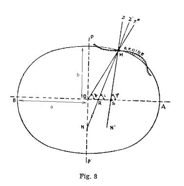
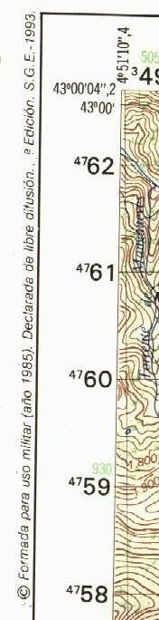
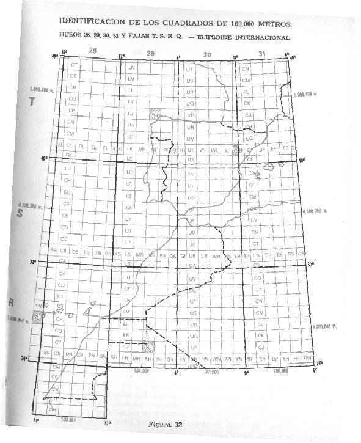

|
Los diferentes elipsoides se diferencian unos de otros en sus parámetros, entre los que se encuentran : - el radio mayor y menor del elipsoide. (a y b)
Cada Datum esta compuesto por: a) un elipsoide,
En el punto Fundamental, las verticales de elipsoide y tierra coinciden. También coinciden las coordenadas astronómicas (las del elipsoide) y las geodésicas (las de la tierra). Definido el Datum, ya se puede elaborar la cartografía de cada lugar, pues se tienen unos parámetros de referencia. |
 |
|
En cuanto a las coordenadas utilizadas en los mapas españoles, más o menos modernos, tenemos :
|
 |
EL DATUM Y TU NAVEGADOR GPS
El sistema GPS trabaja siempre con
el datum WGS84, si bien los distintos navegadores GPS pueden convertir
en tiempo real, dichas coordenadas a las que nosotros les definamos.
Es importante tener bien presente
el tipo de coordenadas que nos está dando nuestro GPS y
el datum que esta utilizando. Sobre todo, si vamos a llevar nuestras
coordenadas a un mapa, o del mapa al GPS. Pues si no nos preocupamos de
hacer coincidir el Datum y las coordenadas del GPS con los del mapa el
error que normalmente daría nuestro Navegador, se puede incrementar
en 200 ó 300 m (por el Datum), o incluso no parecerse en nada (por
las coordenadas). Y esto sería debido, no a su mal funcionamiento
sino a una mala configuración.
La mayoría de los que tenemos
un GPS hemos hecho la prueba de llevárnosle a un Vértice
Geodésico y comprobar las coordenadas obtenidas con las que trae
el mapa en la información adicional. Y casi todos nos hemos llevado
una desagradable sorpresa pensando la escasa precisión que nos había
dado. Más tarde nos enteraríamos a que había sido
debido.
La cartografia española,
tanto la del I.G.N. como la del S.G.E. trabajan con el Datum Europeo 1950
ó 1979 (la diferencia entre ambos es mínima para la precisión
que vienen a dar los Navegadores) y su cuadricula principal con coordenadas
UTM.
Es interesante leerse la información
adicional de los mapas, de ella podremos sacar también el huso
(29, 30 y 31 para la Península y Baleares, 28 para Canarias) y la
zona del huso (S y T para la Península y Baleares, R para Canarias)
en la que se encuentra un punto del mapa. Esta también es información
que se usa a la hora de meter coordenadas UTM a nuestro navegador GPS.
